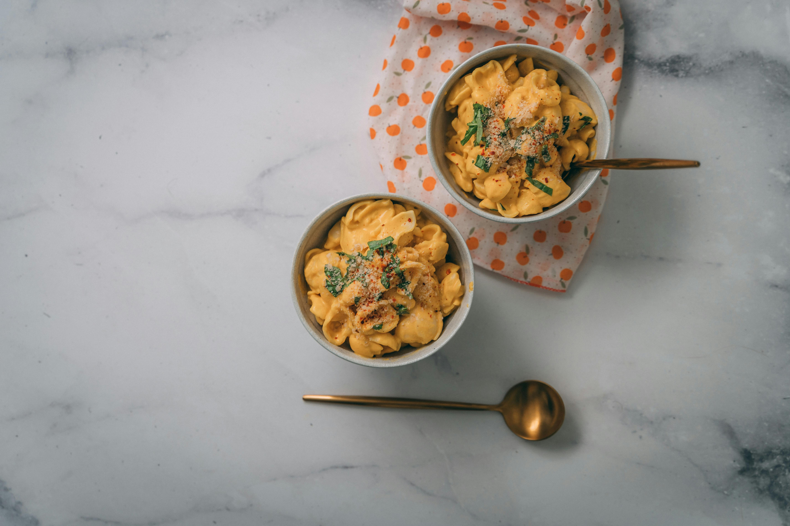

Back to Home
Mac and Cheese Recipe

Description
Mac and Cheese is a classic comfort food made with tender macaroni pasta and a creamy cheese sauce. It's a favorite dish for all ages and perfect for any occasion.
Ingredients
- 2 cups elbow macaroni
- 4 cups shredded cheddar cheese
- 2 cups milk
- 1/4 cup butter
- 1/4 cup all-purpose flour
- 1/2 teaspoon salt
- 1/4 teaspoon black pepper
- 1/2 teaspoon paprika (optional)
- 1/2 cup breadcrumbs (optional)
Steps
- Preheat your oven to 350°F (175°C).
- Cook the elbow macaroni according to the package instructions. Drain and set aside.
- In a large saucepan, melt the butter over medium heat. Once melted, whisk in the flour and cook for about 1-2 minutes until it forms a roux (a thick paste).
- Gradually whisk in the milk, ensuring there are no lumps. Continue to cook and stir until the mixture thickens, about 5-7 minutes.
- Remove the saucepan from heat and stir in the shredded cheddar cheese until melted and smooth. Season with salt, black pepper, and paprika (if using).
- Add the cooked macaroni to the cheese sauce and stir until well combined.
- If you like a crispy topping, transfer the mac and cheese to a baking dish, sprinkle with breadcrumbs, and bake for 20-25 minutes until golden brown on top. If not, you can serve it directly from the saucepan.
- Let the mac and cheese cool for a few minutes before serving. Enjoy!
Like our recipes?
Look at our other recipes: